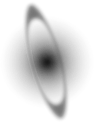

Art piece by Cubialpha
Rasutei
Programmer, design enthusiast, logician, epistemophile, lover of music and fantasy
Experience
Programming
()
+
+
— 3-day Workshop in fullstack web development with React and PHP + Laravel
— Technical Course in Information Technology
— Studying towards bachelor's in Computer Science since 2018
Projects
Pages hosted in Tumblr, used then as a way to share personal information with professionals, and as early playgrounds for webdesign.
These are sample pages for display, and contain no such personal information.
Deuteronöos Index
[discontinued before use]
* Robotic hand art not original.
A passion project in writing, character development and worldbuilding, started circa 2020 and still in development: an original character and a piece of a fictitious world.
Starting as just a roleplaying character with a simple premise, with his personality being developed over time, Ras Silverleaf has slowly grown into a character with a complex personality and inner struggles.
The worldbuilding side of this project is a medieval fantasy setting world which is being rendered into being through writing, including a hard magic system which is being developed.
Website
* Card background art not original.
Titris
I know, very mature
My first serious game project, Titris is a Tetris clone developed for Computer Graphics class in university.
All sounds and the music are original.
Play
Repository
⌗
Innerspace
Emptiness
A first attempt in making a in only HTML/CSS/JS, and a first venture into consistent, randomly-generated map cells.
Play
Repository

Husk
No Return
Written in Discord.py, Husk is a bot with some simple, general functions, and a few specific to a now-discontinued personal project named No Return.
Husk is currently
offline and disused
Incantation
To banish evil
A second attempt at making a game in only HTML/CSS/JS, Incantation is also my second serious game project, developed for Graph Theory class in university.
It is a five-minute wave survival game where the Tree class of graphs is part of the core mechanic.
All sounds and music are original, and part of the code was cannibalized and adapted from Innerspace. Enemy sprite art is credit in the repository.
Play
Theme song
Repository
Jamusesshon
A server-client system to watch YouTube videos synchronously in a group, developed for hosting Listening Parties.
Repository